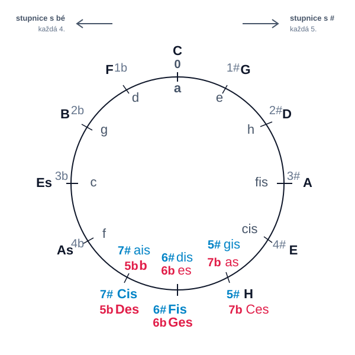

Každý druh stupnice má svoje zákonitosti. Durová stupnica má poltóny medzi 3. - 4. a 7. - 8. stupňom. Molová prirodzená (aiolská) stupnica má poltóny medzi 2. - 3. a 5. - 6. stupňom. Tieto poltóny musia byť zachované vo všetkých odvodzovaných stupniciach. Základné stupnice, ktoré nemajú žiadne predznamenanie sú C dur a a mol. Od nich odvodzujeme ďalšie stupnice.
Durové stupnice s krížikmi tvoríme vždy na piatom stupni predchádzajúcej stupnice tak, že celú predchádzajúcu stupnicu opíšeme od piateho tónu a v takto vzniknutej stupnici zvýšime 7. stupeň, aby sme zachovali poltón (7-8). Vychádzame z hudobnej abecedy, teda stupnice C dur, ktorá nemá žiadne predznamenanie. (Tón, od ktorého je utvorená ďalšia stupnica, je označený hrubo, zvýšený tón je podčiarknutý).
0# c d e f g a h c 1# g a h c d e fis g 2# d e fis g a h cis d 3# a h cis d e fis gis a 4# e fis gis a h cis dis e 5# h cis dis e fis gis ais h 6# fis gis ais h cis dis eis fis 7# cis dis eis fis gis ais his cis
Molové stupnice s krížikmi tvoríme tiež na piatom stupni predchádzajúcej stupnice tak, že celú predchádzajúcu stupnicu opíšeme od piateho tónu a v takto vzniknutej stupnici zvýšime druhý stupeň (poltón medzi 2-3, medzi 1-2 celý tón). Vychádzame zo stupnice a mol, ktorá nemá žiadne predznamenanie.
0# a h c d e f g a 1# e fis g a h c d e 2# h cis d e fis g a 3# fis gis a h cis d e fis 4# cis dis e fis gis a h cis 5# gis ais h cis dis e fis 6# dis eis fis gis ais h cis dis 7# ais his cis dis eis fis gis ais
Durové stupnice s béčkami tvoríme na štvrtom stupni predchádzajúcej stupnice tak, že celú stupnicu opíšeme od štvrtého tónu a v tejto stupnici znížime štvrtý stupeň (poltón medzi 3-4).
0b c d e f g a h c 1b f g a b c d e f 2b b c d es f g a b 3b es f g as b c d es 4b as b c des es f g as 5b des es f ges as b c des 6b ges as b ces des es f ges 7b ces des es fes ges as b ces
Molové stupnice s béčkami tvoríme na štvrtom stupni predchádzajúcej stupnice tak, že celú stupnicu opíšeme od štvrtého tónu a v tejto stupnici znížime šiesty stupeň (poltón medzi 5-6).
0b a h c d e f g a 1b d e f g a b c d 2b g a b c d es f g 3b c d es f g as b c 4b f g as b c des es f 5b b c des es f ges as b 6b es f ges as b ces des es 7b as b ces des es fes ges as
Poradie stupníc môžeme graficky znázorniť v kvart - kvintovom kruhu, kde v smere pohybu hodinových ručičiek sú znázornené stupnice s krížikmi (každý piaty tón v stupnici) a proti smeru hodinových ručičiek sú stupnice s béčkami (každý štvrtý tón).

Z tohto kruhu môžeme zistiť, ktoré stupnice majú rovnaké predznamenanie. Napríklad paralely:
C - a, G - e, D - H, B - g...
Stupnice Cis - Des, Fis - Ges, H - Ces, b - ais, es - dis, as - ges sú písané pod sebou z toho dôvodu, že sú enharmonické - rovnako znejú aj sa rovnako hrajú, ale ináč sa zapisujú.
Prirodzená molová stupnica má poltóny medzi 2-3 a 5-6 tónom.
a h c d e f g a 1 1/2 1 1 1/2 1 1
V hudbe potrebujeme pri harmonizácii vytvoriť napätie, aby siedmy tón tiahol k základnému tónu, preto kvôli harmonizácii zvyšujeme siedmy stupeň v prirodzenej molovej stupnici. Takto nám vznikne stupnica, ktorá sa nazýva harmonická.
a h c d e f gis a 1 1/2 1 1 1/2 1,5 1/2
V tejto stupnici máme tri poltóny, a jeden skok jeden a poltón. Medzi 5-6 (e-f) je poltón, potom nasleduje skok jeden celý a poltón medzi 6-7 (f-gis) a poltón medzi 7-8 (gis-a). Je to nemelodické, pretože máme najmenšiu vzdialenosť medzi tónmi a potom skok. Posunutím šiesteho tónu o poltón vyššie môžeme tento jeden a poltónový skok odstrániť a vyrovnať vzdialenosti na celé tóny. Robí sa to z melodického hľadiska, preto takto vzniknutá stupnica sa nazýva melodická.
a h c d e fis gis a 1 1/2 1 1 1 1 1/2
Poznámka: Táto stupnica sa smerom dole hrá ako prirodzená (aiolská)!
| Stupnica | C | D | E | F | G | A | H | C | D | E | F | G | A | H |
|---|---|---|---|---|---|---|---|---|---|---|---|---|---|---|
| Jónska (Dur) | C | D | E | F | G | A | H | C | ||||||
| Dórska | D | E | F | G | A | H | C | D | ||||||
| Frygická | E | F | G | A | H | C | D | E | ||||||
| Lydická | F | G | A | H | C | D | E | F | ||||||
| Mixolydická | G | A | H | C | D | E | F | G | ||||||
| Aiolská (Mol) | A | H | C | D | E | F | G | A | ||||||
| Lokrická | H | C | D | E | F | G | A | H |
Pentatonická stupnica má päť modov (päticónové usporiadanie):
| Typ | Tóny stupnice | |||||
|---|---|---|---|---|---|---|
| pentatonická mol | a | c | d | e | g | a |
| pentatonická dur | c | d | e | g | a | c |
| pentatonická mol | d | e | g | a | c | d |
| pentatonická mol | e | g | a | c | d | e |
| pentatonická dur | g | a | c | d | e | g |
Pentatonická stupnica bluesová je rozšírená o chromatický tón (tzv. blue note):